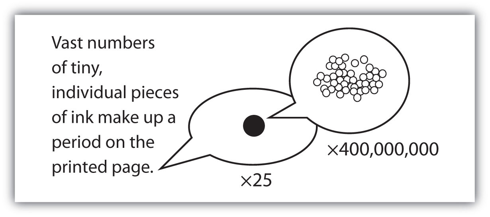
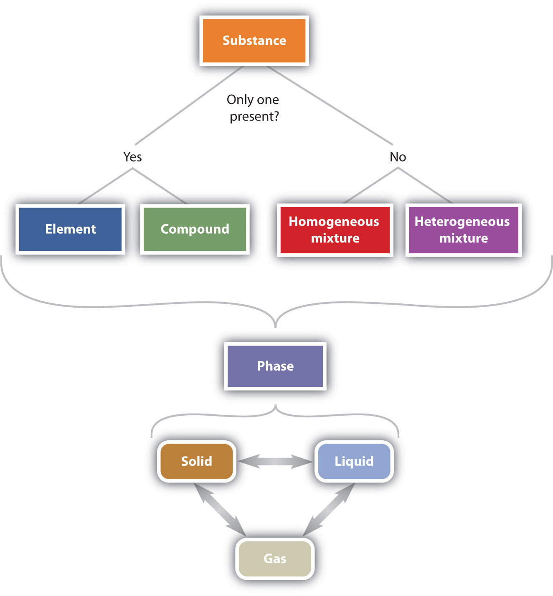

Part of understanding matter is being able to describe it. One way chemists describe matter is to assign different kinds of properties to different categories.
The properties that chemists use to describe matter fall into two general categories. Physical propertiesA charactristic that describes matter, such as size, shape, and color. are characteristics that describe matter. They include characteristics such as size, shape, color, and mass. Chemical propertiesA characteristic that describes how matter changes its chemical structure or composition. are characteristics that describe how matter changes its chemical structure or composition. An example of a chemical property is flammability—a material’s ability to burn—because burning (also known as combustion) changes the chemical composition of a material.
Any sample of matter that has the same physical and chemical properties throughout the sample is called a substanceAny sample of matter that has the same physical and chemical properties throughout the sample.. There are two types of substances. A substance that cannot be broken down into chemically simpler components is an elementA substance that cannot be broken down into chemically simpler components.. Aluminum, which is used in soda cans, is an element. A substance that can be broken down into chemically simpler components (because it has more than one element) is a compoundA substance that can be broken down into chemically simpler components. (Figure 1.2 "The General Steps of the Scientific Method"). Water is a compound composed of the elements hydrogen and oxygen. Today, there are about 118 elements in the known universe. In contrast, scientists have identified tens of millions of different compounds to date.
Sometimes the word pure is added to substance, but this is not absolutely necessary. By definition, any single substance is pure.
The smallest part of an element that maintains the identity of that element is called an atomThe smallest part of an element that maintains the identity of that element.. Atoms are extremely tiny; to make a line 1 inch long, you would need 217 million iron atoms. The smallest part of a compound that maintains the identity of that compound is called a moleculeThe smallest part of a compound that maintains the identity of that compound.. Molecules are composed of atoms that are attached together and behave as a unit. Scientists usually work with millions and millions of atoms and molecules at a time. When a scientist is working with large numbers of atoms or molecules at a time, the scientist is studying the macroscopicA view of the universe in which one is working with large numbers of atoms or molecules at a time. view of the universe. However, scientists can also describe chemical events on the level of individual atoms or molecules, which is referred to as the microscopicA view of the universe in which one is working with a few atoms or molecules at a time. viewpoint. We will see examples of both macroscopic and microscopic viewpoints throughout this book (Figure 1.3 "How Many Particles Are Needed for a Period in a Sentence?").
Figure 1.3 How Many Particles Are Needed for a Period in a Sentence?
Although we do not notice it from a macroscopic perspective, matter is composed of microscopic particles so tiny that billions of them are needed to make a speck we can see with the naked eye. The ×25 and ×400,000,000 indicate the number of times the image is magnified.
A material composed of two or more substances is a mixtureA sample composed of two or more substances.. In a mixture, the individual substances maintain their chemical identities. Many mixtures are obvious combinations of two or more substances, such as a mixture of sand and water. Such mixtures are called heterogeneous mixturesA mixture that is a combination of two or more substances.. In some mixtures, the components are so intimately combined that they act like a single substance (even though they are not). Mixtures with a consistent composition throughout are called homogeneous mixtures (or solutions)A mixture that acts as a single substance so that it is not obvious that two or more substances are present.. Sugar dissolved in water is an example of a solution. A metal alloy, such as steel, is an example of a solid solution. Air, a mixture of mainly nitrogen and oxygen, is a gaseous solution.
How would a chemist categorize each example of matter?
Solution
How would a chemist categorize each example of matter?
coffee
hydrogen
an egg
Another way to classify matter is to describe it as a solid, a liquid, or a gas, which was done in the examples of solutions. These three descriptions, each implying that the matter has certain physical properties, represent the three phasesA certain form of matter that includes a specific set of physical properties. of matter. A solid has a definite shape and a definite volume. Liquids ordinarily have a definite volume but not a definite shape; they take the shape of their containers. Gases have neither a definite shape nor a definite volume, and they expand to fill their containers. We encounter matter in each phase every day; in fact, we regularly encounter water in all three phases: ice (solid), water (liquid), and steam (gas).
We know from our experience with water that substances can change from one phase to another if the conditions are right. Typically, varying the temperature of a substance (and, less commonly, the pressure exerted on it) can cause a phase changeA physical process in which a substance goes from one phase to another., a physical process in which a substance goes from one phase to another (Figure 1.4 "Boiling Water"). Phase changes have particular names depending on what phases are involved, as summarized in Table 1.1 "Phase Changes".
Table 1.1 Phase Changes
| Change | Name |
|---|---|
| solid to liquid | melting, fusion |
| solid to gas | sublimation |
| liquid to gas | boiling, evaporation |
| liquid to solid | solidification, freezing |
| gas to liquid | condensation |
| gas to solid | deposition |
Figure 1.5 "The Classification of Matter" illustrates the relationships between the different ways matter can be classified.
Figure 1.5 The Classification of Matter
Matter can be classified in a variety of ways, depending on its properties.
Explain the differences between the physical properties of matter and the chemical properties of matter.
What is the difference between a heterogeneous mixture and a homogeneous mixture? Give an example of each.
Give at least two examples of a phase change and state the phases involved in each.
Physical properties describe the existence of matter, and chemical properties describe how substances change into other substances.
A heterogeneous mixture is obviously a mixture, such as dirt; a homogeneous mixture behaves like a single substance, such as saltwater.
solid to liquid (melting) and liquid to gas (boiling) (answers will vary)
Does each statement refer to a chemical property or a physical property?
Does each statement refer to a chemical property or a physical property?
Define element. How does it differ from a compound?
Define compound. How does it differ from an element?
Give two examples of a heterogeneous mixture.
Give two examples of a homogeneous mixture.
Identify each substance as an element, a compound, a heterogeneous mixture, or a solution.
Identify each substance as an element, a compound, a heterogeneous mixture, or a solution.
Identify each substance as an element, a compound, a heterogeneous mixture, or a solution.
Identify each material as an element, a compound, a heterogeneous mixture, or a solution.
What word describes each phase change?
What word describes each phase change?
An element is a substance that cannot be broken down into chemically simpler components. Compounds can be broken down into simpler substances.
a salt and pepper mix and a bowl of cereal (answers will vary)